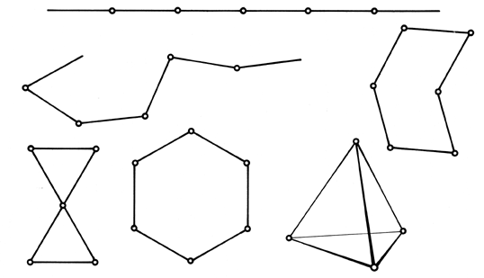

Fig. 608.01 Instability of Six Vectors Except as Tetrahedron: The alternate consequences of six vectored configurations. Only the tetrahedron is fully stable. It is synergetic.
Copyright © 1997 Estate of R. Buckminster Fuller